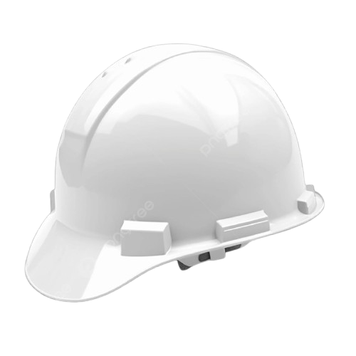

Civil Engineer HARISH ← Back to HomeSuccessfully completed an internship on a Bridge Cum Barrage Project under the Water Resources Department. The project involved quality control, concrete testing, compaction monitoring, hydraulic infrastructure supervision, and preparation of daily construction progress reports.
Bridge Cum Barrage
Water Resources
2022
Internship
Hydraulic Infrastructure
Successfully supported the engineering team by maintaining accurate quality records, conducting field tests, and preparing daily reports. The internship provided hands-on experience in bridge construction, barrage structures, and hydraulic engineering practices.